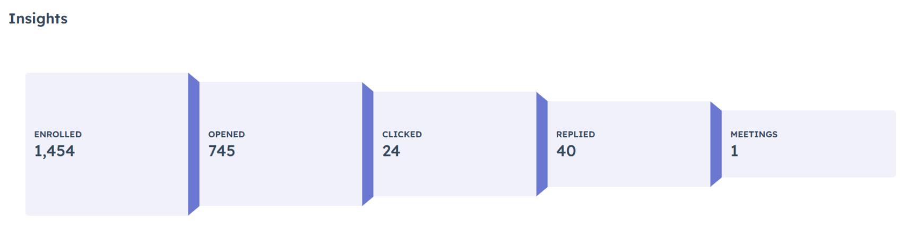
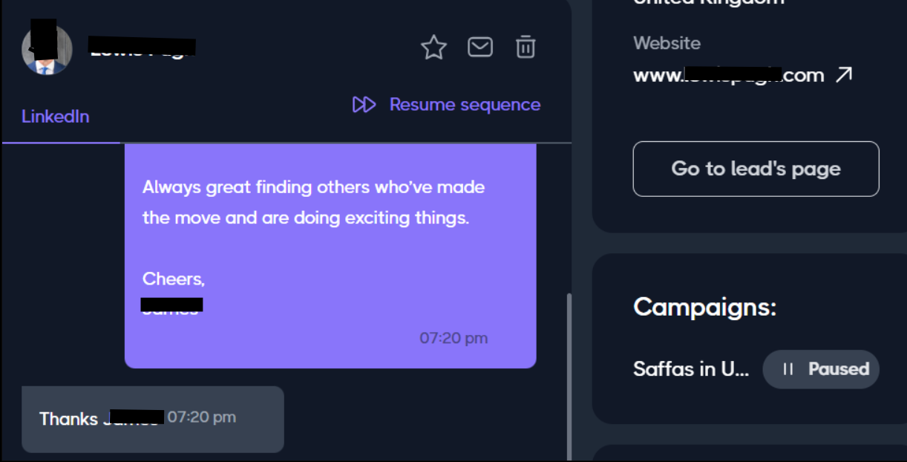
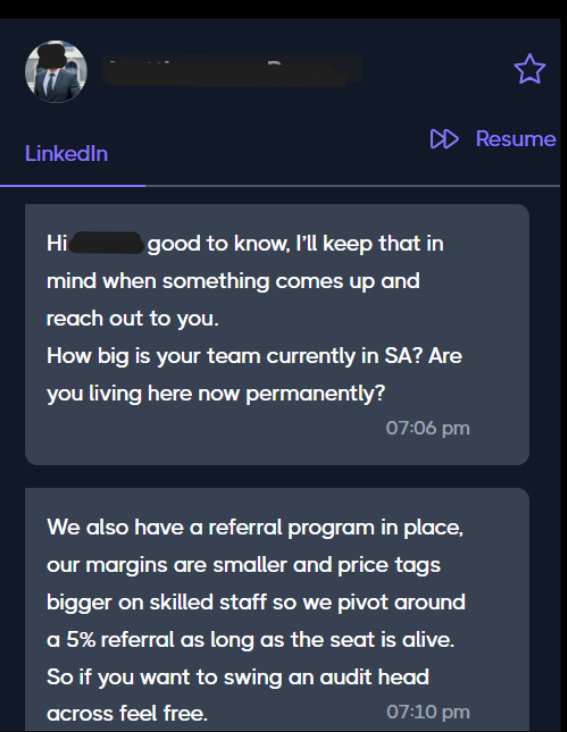

A LinkedIn outreach campaign using targeted prospecting, automated sequencing and human follow-up to create real conversations at scale.
Create a repeatable outbound approach that could reach relevant LinkedIn prospects without relying entirely on manual outreach, while still keeping follow-up human and conversational.
Selected anonymised campaign screenshots. Names and identifying details have been removed.

Campaign funnel: 1,454 enrolled, 745 opened, 24 clicked, 40 replied and 1 meeting recorded in the campaign view.

Example of a prospect engaging with the outreach and continuing the conversation.

Example of outreach leading to a useful business conversation and referral discussion.
The strongest signal is not simply the size of the sequence. The useful part is the 40 replies and the real conversations that followed, because those reveal whether the targeting and messaging were creating engagement rather than just activity.